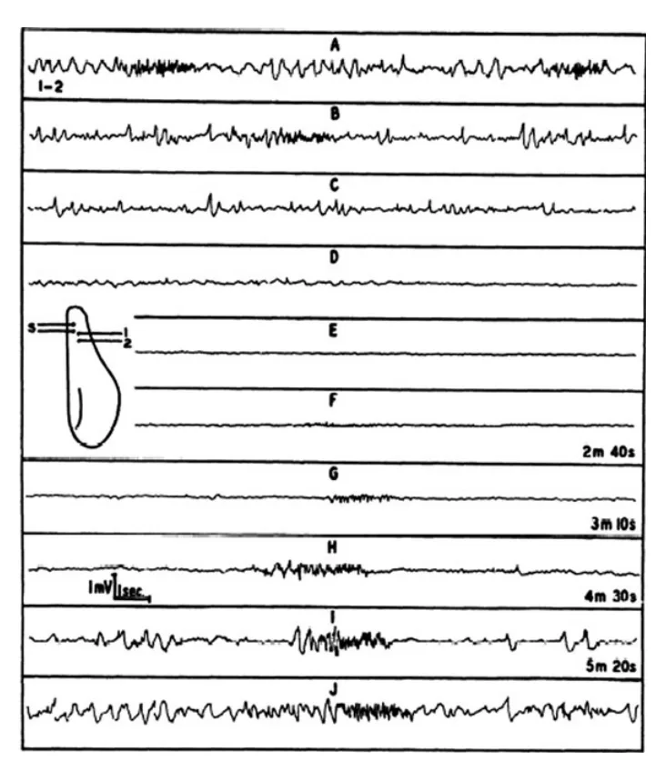
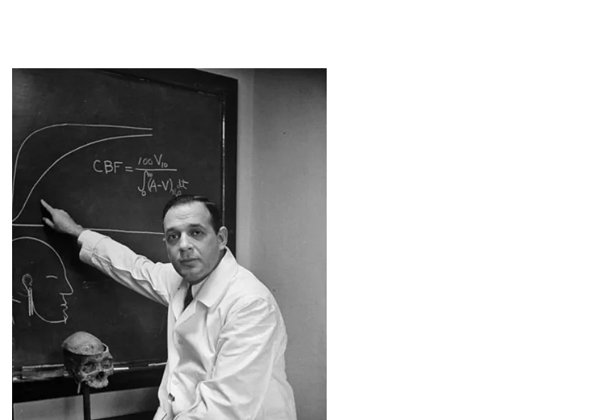

Chương 13 — Thần kinh học: Nền tảng của chẩn đoán hình ảnh não bộ
Chương 13
Thần kinh học: Nền tảng của Chẩn đoán Hình ảnh Não
Thần kinh học lâm sàng ban đầu gắn liền với tâm thần học trong thế kỷ XIX và chỉ bắt đầu tách ra thành một chuyên khoa riêng vào khoảng năm 1900. Tại Bắc Mỹ, Đơn vị Thần kinh của Bệnh viện Thành phố Boston là một trong những cái nôi đầu tiên cho ngành học mới này. Vào giữa thế kỷ, một thế hệ các nhà thần kinh học kế tiếp nhau tại Boston, bao gồm Stanley Cobb, Tracy Putnam, Derek Denny-Brown, Raymond Adams và C. Miller Fisher, đã đặt nền móng cho thần kinh học lâm sàng hiện đại như một chuyên ngành độc lập. Loại thuốc hiệu quả đầu tiên để điều trị động kinh đã được giới thiệu. Hiện tượng ức chế vỏ não lan tỏa (spreading cortical depression) được Leão phát hiện và liên hệ với chứng đau nửa đầu (migraine). Vai trò của dopamine và chất đen (substantia nigra) trong bệnh Parkinson đã được công nhận. Carl Schmidt và Seymour Kety tại Penn đã phát triển các phương pháp đo tuần hoàn mạch máu não, bước tiến then chốt đầu tiên hướng tới sự ra đời của chụp cắt lớp phát xạ positron (PET) và kỷ nguyên mới của chụp quét não. Việc phát triển vắc-xin bại liệt, vốn giúp xóa sổ gần như hoàn toàn căn bệnh gây liệt đáng sợ này, là một trong những thành tựu y học và thần kinh học vĩ đại nhất thế kỷ. Trong những bước tiến hiện đại này, thần kinh học lâm sàng ngày càng được xây dựng trên nền tảng nghiên cứu động vật nghiêm ngặt.
Thần kinh học lâm sàng khởi nguồn từ Hoa Kỳ, Vương quốc Anh và Pháp vào cuối thế kỷ XIX. Lịch sử của nó rất phong phú, sâu sắc và được ghi chép trong nhiều tài liệu khác nhau. Dù ghi nhận lịch sử đó, nhưng với trọng tâm về nguồn gốc của khoa học thần kinh hiện đại, chúng ta sẽ bắt đầu từ Bắc Mỹ.
Nguồn gốc của thần kinh học (xem Scott và Toole, 1998 để biết tóm tắt) bắt đầu ở Anh vào năm 1861 với việc khai trương Bệnh viện Quốc gia chuyên Cứu trợ và
Điều trị Người Bại liệt và Động kinh tại Quảng trường Queen ở London. Tại Hoa Kỳ, Weir Mitchell ở Philadelphia đã xuất bản cuốn ‘‘Gunshot Wounds and Other Injuries of Nerve’’ (Vết thương do đạn bắn và các tổn thương dây thần kinh khác) vào năm 1864 (dựa trên kinh nghiệm của ông trong Nội chiến Hoa Kỳ), và William Hammond, cũng tại Philadelphia, xuất bản ‘‘A Treatise on the Diseases of the Nervous System’’ (Chuyên luận về các Bệnh của Hệ Thần kinh), thường được coi là cuốn sách giáo khoa đầu tiên về thần kinh học. Giáo sư thần kinh học đầu tiên trên thế giới là Jean-Martin Charcot lừng danh tại Paris, được bổ nhiệm năm 1882. Tiếp theo đó ở Anh là việc bổ nhiệm John Hughlings Jackson, thường được tôn vinh là ‘‘cha đẻ của thần kinh học Anh quốc’’ (Scott và Toole, 1998), tại Quảng trường Queen vào năm 1884.
Y học Hoa Kỳ bắt đầu hình thành như một nghề chuyên nghiệp vào cuối thế kỷ XIX, dẫn đầu bởi đội ngũ giảng viên y khoa của Đại học Johns Hopkins mới thành lập. Tại đó, William Osler trong nội khoa và William Halsted trong ngoại khoa đã thiết lập các tiêu chuẩn mới cho đào tạo và thực hành trong một hệ thống trường y và bệnh viện vốn phần lớn chưa có quy chuẩn. Tình trạng lộn xộn kéo dài sang thế kỷ XX đến mức Viện Carnegie cuối cùng phải ủy thác cho một người ngoài ngành y, Louis Flexner, một giáo sư tiếng Anh, đánh giá thực trạng y học Hoa Kỳ và đưa ra khuyến nghị. Từ cuộc rà soát đó đã ra đời ‘‘Báo cáo Flexner’’ (1910), một bản đánh giá từng trường một về giáo dục và thực hành y khoa. Một trong những khuyến nghị chính là các trường y phải duy trì đội ngũ giảng viên toàn thời gian để giảng dạy y khoa. Điều này đã tạo nền tảng cho sự trỗi dậy của đội ngũ giảng viên trường y hàn lâm dựa trên nghiên cứu, và kéo theo đó là sự phát triển của các chuyên khoa lâm sàng và nghiên cứu y sinh.
Các bệnh lý hệ thần kinh theo truyền thống được giảng dạy chung với các bệnh khác trong trường y và do các bác sĩ nội khoa điều trị. Sau Mitchell và Hammond, những giáo sư thần kinh học đầu tiên xuất hiện, cùng với sự thành lập Hiệp hội Thần kinh Hoa Kỳ (Talley, 2005). Nhiều bệnh của hệ thần kinh rất khó chẩn đoán; chẳng hạn, mãi đến năm 1868 Charcot mới xác định được bệnh đa xơ cứng (multiple sclerosis) là một bệnh thần kinh đặc hiệu. Đến năm 1900, hầu hết các trường y lớn đều có khoa bệnh thần kinh và tâm thần, nhưng vẫn chưa có bệnh viện nào chuyên điều trị các rối loạn thần kinh.
Cho đến tận đầu thế kỷ XX, thần kinh học ở Hoa Kỳ vẫn có xu hướng sáp nhập với tâm thần học, cả trong thực hành lâm sàng lẫn trong các khoa tâm thần kinh hợp nhất tại các trường y và bệnh viện. Chưa có sự phân tách rạch ròi dọc theo phổ liên tục của các bệnh thần kinh và tâm thần. Rất ít người có thể kiếm sống chỉ bằng nghề khám chữa bệnh thần kinh đơn thuần. Khi chưa có các phương pháp điều trị hiệu quả cho rối loạn thần kinh, việc thực hành bị giới hạn ở mô tả triệu chứng và suy luận logic để khoanh vùng vị trí não bộ cùng bản chất bệnh lý nền tảng gây ra triệu chứng.
Sau báo cáo Flexner, thần kinh học cùng với các chuyên khoa khác bắt đầu định hình. Đến thập niên 1930 vẫn chỉ có dưới 100 bác sĩ thần kinh được cấp chứng chỉ hành nghề ở Hoa Kỳ; đến năm 1950 con số này đã vượt quá 1.400 (Talley, 2005). Sự gia tăng nhanh chóng này đi kèm với việc nâng cao độ tin cậy trong chẩn đoán các bệnh thần kinh. Chẳng hạn, Talley (2005, 390) lưu ý rằng
Trong suốt thế kỷ XIX, các bác sĩ coi chứng cuồng loạn (hysteria) là tình trạng thần kinh phổ biến nhất ảnh hưởng đến phụ nữ từ tuổi dậy thì đến mãn kinh. . . . Khi chứng cuồng loạn dần suy giảm với tư cách một chẩn đoán thần kinh trong nửa đầu thế kỷ XX, các bác sĩ ngày càng diễn giải nhiều bệnh nhân trong số này, đặc biệt là phụ nữ, là mắc bệnh đa xơ cứng.
(Trong thời gian tôi được đào tạo y khoa, một phụ nữ mắc chứng cuồng loạn vẫn được trình bệnh án trong buổi đi buồng tại khoa thần kinh của Denny-Brown ở Bệnh viện Thành phố Boston vào cuối thập niên 1950.)
Tâm thần học bắt đầu trỗi dậy độc lập vào đầu thế kỷ XX, nhờ cú hích lớn từ Sigmund Freud và các phương pháp phân tâm học của ông. Góc nhìn từ phía thần kinh học (xem Aird, 1994) cho rằng những phương pháp này đã mang lại cho phân tâm học một bản sắc nghề nghiệp vừa hấp dẫn bệnh nhân vừa mang lại thu nhập cao cho nhà phân tâm. Sự phát triển này của tâm thần học đã có tác dụng làm chậm lại sự tách ra độc lập của thần kinh học.
Các nhà thần kinh học bắt đầu khẳng định được bản sắc riêng khi họ bắt đầu sở hữu những công cụ của riêng mình. Điện não đồ (EEG) đã mở đường (xem Chương 8). Sau phát hiện năm 1929 của Hans Berger ở Vienna, một số phòng thí nghiệm trong thập niên 1930 bắt đầu nghiên cứu các sóng điện ghi được từ da đầu, tiến hành nghiên cứu cơ bản về bản chất của các sóng này cũng như sử dụng chúng để phân biệt giữa các dạng cơn động kinh khác nhau. Dù các sóng này chỉ đại diện cho tổng hoạt động của nhiều nơ-ron, EEG là công cụ đầu tiên cung cấp cho các nhà thần kinh học dữ liệu khách quan về trạng thái chức năng của não bộ khi khỏe mạnh cũng như lúc bệnh tật.
Đơn vị Thần kinh của Bệnh viện Thành phố Boston
Nhiều bước phát triển thúc đẩy sự trỗi dậy của thần kinh học đã bắt đầu tại Đơn vị Thần kinh Harvard của Bệnh viện Thành phố Boston, đơn vị giảng dạy thần kinh học đầu tiên tại Hoa Kỳ (Aird, 1994, 233), được thành lập dưới sự dẫn dắt của Stanley Cobb vào năm 1925 và được tài trợ bởi các khoản trợ cấp từ Quỹ Rockefeller.
Stanley Cobb. Stanley Cobb sớm quan tâm đến cơ sở của các cơn co giật động kinh và lần đầu tiên kiểm chứng giả thuyết cho rằng chúng là do tình trạng thiếu oxy não sau co thắt mạch máu não. (Tình trạng thiếu oxy não đang được nghiên cứu tích cực vào cuối thập niên 1950; tôi nhớ công trình của John Barlow tại đơn vị này khi tôi còn là sinh viên y khoa ở đó.)
Sóng não đã được xác nhận và nghiên cứu trong các thí nghiệm trên động vật vào thập niên 1930 bởi một số nhà nghiên cứu, bao gồm Edgar Adrian tại Cambridge, Anh. William Lennox, một nghiên cứu sinh về bệnh học thần kinh tại Đơn vị Thần kinh, đã hợp tác với Cobb cùng Frederic và Erna Gibbs để kiểm chứng giả thuyết rằng các cơn co giật là do những thay đổi trong hóa học thần kinh não bộ. Để phục vụ công trình này, thiết bị mới giúp ghi đồng thời từ nhiều vị trí trên da đầu đã được kỹ thuật viên Albert Grass phát triển. Điều này dẫn đến sự ra đời của Công ty Thiết bị Grass, nơi các thiết bị ghi EEG và phân tích điện sinh lý đã trở thành tiêu chuẩn trong các phòng thí nghiệm thần kinh học và khoa học thần kinh tại Hoa Kỳ cũng như trên toàn thế giới trong nhiều thập kỷ. Máy ảnh Grass là phương tiện chính để ghi lại các dấu vết dao động ký của đáp ứng điện sinh lý cho đến khi công nghệ ghi, lưu trữ và phát lại kỹ thuật số xuất hiện vào thập niên 1990. (Tôi từng có một loạt máy ảnh này trong phòng thí nghiệm của mình từ thập niên 1960. Thảm họa tồi tệ nhất là sau một thí nghiệm tuyệt vời lại phát hiện ra ai đó đã quên tháo nắp ống kính.)
Bệnh động kinh đóng vai trò quan trọng không chỉ trong việc cho phép khảo sát các cơ chế não bộ mà còn là phương tiện tập hợp các nhà thần kinh học. Liên đoàn Chống Động kinh Quốc tế được thành lập theo hình thức hiện đại năm 1935 và Liên đoàn Động kinh Quốc gia năm 1939 (xem Aird, 12), đưa các nhà thần kinh học và các nhóm cộng đồng xích lại gần nhau để chống lại sự kỳ thị xã hội đối với những người mắc bệnh động kinh (mối liên kết giữa các bác sĩ lâm sàng, nhà nghiên cứu và công chúng này sau đó sẽ đóng vai trò trong việc thành lập Viện Thần kinh học tại Viện Y tế Quốc gia [NIH]). Lennox tham gia cả hai tổ chức này, đồng thời thành lập Hiệp hội Động kinh Hoa Kỳ và tạp chí của hội, Epilepsia. Cuốn Atlas of Electroencephalography (Tập bản đồ Điện não đồ) của Gibbs và Gibbs (1950) cùng cuốn Epilepsy and Related Disorders (Động kinh và các Rối loạn Liên quan) của Lennox (1960) đã đóng góp to lớn vào việc định nghĩa động kinh như một thực thể lâm sàng đa dạng cũng như vào chuyên khoa thần kinh học đang nổi lên.
Một bước tiến khác là việc phát hiện ra các loại thuốc có thể làm giảm hoặc kiểm soát cơn co giật mà không gây ức chế quá mức chức năng tâm thần. Công trình này bắt đầu với Tracy Putnam, người từng được đào tạo dưới sự hướng dẫn của Harvey Cushing về phẫu thuật thần kinh tại Bệnh viện Peter Bent Brigham ở Boston và sau đó gia nhập cùng Cobb tại Đơn vị Thần kinh. Cobb ngày càng quan tâm đến các khía cạnh tâm thần của bệnh nhân và năm 1935 chuyển sang Bệnh viện Đa khoa Massachusetts (MGH) để mang cách tiếp cận thần kinh học của mình vào đơn vị tâm thần học mới tại đó.
Putnam thay thế Cobb làm giám đốc đơn vị tại Bệnh viện Thành phố Boston. Vào thời điểm đó, người ta đã biết barbiturate có tác dụng ức chế cơn co giật, nhưng phải trả giá quá đắt là làm suy giảm hoạt động tâm thần (chúng ta đã gặp vấn đề đó trong câu chuyện về H. M., Chương 12). Putnam cùng một cộng tác viên trẻ, Houston Merritt, bắt đầu thử nghiệm các dẫn xuất phenyl khác nhau của barbiturate để tìm hiểu tác động khác biệt của chúng lên các dạng co giật khác nhau. Điều này dẫn đến việc xác định diphenylhydantoin (phenytoin, Dilantin) là một tác nhân hiệu quả vào năm 1938 (xem Merritt và Putnam, 1984). Tầm quan trọng của phát hiện này đối với y học nói chung và thần kinh học nói riêng được thể hiện qua các nhận xét sau:
Dilantin đã trở thành loại thuốc đầu tiên ức chế hiệu quả các cơn co giật động kinh ở người.
(Vilensky et al., 2004)
Thành công tức thì của phenytoin đã mở ra kỷ nguyên hiện đại của liệu pháp thuốc chống động kinh.
(Aird, 1994, 14–15)
Merritt tiếp tục giữ chức trưởng đơn vị trong thời gian ngắn khi cuộc tìm kiếm người kế nhiệm được tiến hành, dẫn đến việc bổ nhiệm Derek Denny-Brown từ Anh. Ông đến vào năm 1941, và sau đó Merritt theo chân Putnam tới Columbia. Cuốn Textbook of Neurology (Giáo trình Thần kinh học) của Merritt (xuất bản lần đầu năm 1958) đã góp phần định hình lĩnh vực mới dựa trên các nguyên lý khoa học mà ông và những người khác đã đưa vào.
Derek Denny-Brown. Derek Denny-Brown được giáo dục tại quê hương New Zealand, sau đó được đào tạo về sinh lý học tủy sống tại Oxford với Sherrington vào thập niên 1920. Ông là một trong nhóm học trò xuất sắc cùng Creed, Liddell và Eccles, những người đã cùng Sherrington cho ra đời tác phẩm kinh điển Reflex Activity of the Spinal Cord (Hoạt động Phản xạ của Tủy sống) năm 1932 (xem Creed et al., 1932). Năm 1930, Denny-Brown và Sherrington ghi nhận sự huy động rõ rệt các đơn vị vận động lớn hơn khi mức độ kích thích các sợi hướng tâm tăng lên, điều được coi là bằng chứng đầu tiên cho ‘‘nguyên lý kích thước’’ (size principle) sau này được Elwood Henneman và các cộng sự nghiên cứu sâu và mô tả như một nguyên lý tổng quát (Henneman, 1967) (xem Chương 9). Denny-Brown tiếp tục phát triển máy điện cơ đồ (EMG) tại London để chẩn đoán các rối loạn cơ và đưa sinh thiết cơ vào làm công cụ hỗ trợ cho mục đích này. Ông cũng cho ra đời những bài báo kinh điển về các cơ chế thần kinh kiểm soát việc đi tiểu và đại tiện, vốn là kiến thức thiết yếu cho việc chăm sóc bệnh nhân chấn thương tủy sống.
Năm 1936, Denny-Brown là Nghiên cứu sinh của Quỹ Rockefeller làm việc cùng Fulton tại Yale, nơi ông bắt đầu các nghiên cứu về tác động của việc cắt bỏ vỏ não trước trung tâm lên chức năng vận động ở khỉ. Điều này trở thành một chủ đề chính trong nghiên cứu của ông tại Đơn vị Thần kinh từ thập niên 1940 đến 1960. Như Vilensky et al. (2004, 510) ghi nhận,
Mục tiêu là tìm hiểu cách các cấp độ khác nhau của hệ thần kinh kiểm soát hành vi vận động ở linh trưởng và qua đó phát triển các liệu pháp nhằm cải thiện các tư thế và cử động bất thường ở bệnh nhân của ông.
Công trình này đã sản sinh ra nhiều bài báo, một số cuốn sách, và hàng trăm thước phim (tổng cộng 222.000 feet) về các rối loạn này. (Các đoạn phim là một phần không thể thiếu trong giảng dạy của Denny-Brown, như tôi nhớ từ các bài giảng vào cuối thập niên 1950 và một đợt thực tập luân khoa tại khoa của ông. Những con khỉ trong phim trông thảm thương trong tình trạng mất chức năng vận động chẳng khác nào các bệnh nhân có tổn thương tương ứng, đó tất nhiên là chủ ý của Denny-Brown, dù việc xem chúng thật không dễ chịu chút nào. Có thể các chuẩn mực ngày nay, bị chi phối bởi sự nhạy cảm của sinh viên và những người cực đoan chống nghiên cứu trên động vật, sẽ không cho phép việc sử dụng động vật như vậy; nhưng điều đó đã được thực hiện với niềm tin rằng không có cách nào tốt hơn để phơi bày bản chất nền tảng của bệnh lý ở người hơn là quan sát và thấu hiểu nó ở một loài động vật khác. Đây là một trong những nền tảng cho sự trỗi dậy của y học khoa học [xem Warner, 1997; Dagi, 1997a].)
Vilensky et al. (2004) lưu ý rằng ‘‘khả năng viết lách của Denny-Brown không ngang tầm với kỹ năng phân tích của ông,’’ một nhận xét cũng đúng với sự tối nghĩa thỉnh thoảng xuất hiện trong các bài giảng của ông về các rối loạn thần kinh phức tạp. Trong đợt thực tập tại khoa, tôi từng hỏi một bác sĩ nội trú xem anh ta có thể giải thích một cách đơn giản lý thuyết của Denny-Brown về cơ sở thần kinh của chứng mất ngôn ngữ (aphasia) không. Anh ta đáp: ‘‘Chúng tôi cũng chẳng hiểu đâu, nên đừng lo.’’
Chương trình đào tạo của Denny-Brown rất chú trọng đến bệnh học thần kinh. Điều này dựa trên một buổi hội chẩn cắt não hằng tuần, trong đó các bác sĩ nội trú trình bày bệnh sử, thăm khám thực thể và thăm khám thần kinh; thảo luận chẩn đoán phân biệt; và dự đoán các phát hiện bệnh học thần kinh. Đây là một ứng dụng của phương pháp ca bệnh lâm sàng – bệnh lý học trong đào tạo y khoa vốn là truyền thống lâu đời tại Harvard. Denny-Brown sau đó sẽ thảo luận quan điểm và dự đoán của riêng mình, rồi bộ não đã cố định trong formalin sẽ được đưa ra và nhà bệnh học thần kinh sẽ cắt não và mô tả các phát hiện. Uy thế của ông lớn đến mức người ta nói đùa rằng nếu dự đoán của ông sai, thì chính bộ não đó bị sai! Như Vilensky et al. (2004) ghi nhận, giai thoại này cho thấy phong cách khá độc đoán của Denny-Brown trong việc điều hành đơn vị. Khi ông không hài lòng, các mạch máu vùng thái dương sẽ bắt đầu đập phập phồng. Điều này xảy ra thường xuyên khi Jerry Lettvin, nhà thần kinh học và sinh lý học thần kinh trẻ tuổi tài năng, làm việc tại khoa của ông vào cuối thập niên 1940. Một câu chuyện nổi tiếng kể rằng, để trêu chọc, Jerry đã sắp xếp sao cho tất cả các dấu hiệu Babinski ở một bên buồng bệnh đều có ngón chân duỗi lên còn bên kia đều cụp xuống. Khi Denny-Brown nhận ra chuyện gì đang xảy ra, các mạch máu vùng thái dương lập tức đập phập phồng.
Học thuật và tài lãnh đạo của Denny-Brown làm lu mờ những bận tâm nhỏ nhặt đó. Đơn vị Thần kinh đã gặt hái thành công vang dội. Vilensky et al. (2004) ghi nhận rằng đến đầu thập niên 1960, trưởng khoa của gần một nửa trong số 41 khoa thần kinh tại Hoa Kỳ từng được đào tạo dưới sự dẫn dắt của Denny-Brown. Ngoài ra còn có các chuyến thăm của những nhà thần kinh học lỗi lạc từ khắp nơi trên thế giới. Ông đã đào tạo hơn 300 bác sĩ thần kinh, qua đó đóng vai trò trung tâm trong sự trỗi dậy của thần kinh học hiện đại.
Raymond Adams. Trong số các học trò có Raymond D. Adams, người gia nhập nhóm của Denny-Brown để đứng đầu bộ phận bệnh học thần kinh tại Đơn vị Thần kinh năm 1941. Công trình ban đầu của ông nghiên cứu về chấn động não thực nghiệm ở mèo và liệt vận động ở chuột, cho thấy cách tiếp cận thực nghiệm đối với bệnh thần kinh dựa trên nghiên cứu động vật vốn đang cung cấp cơ sở khoa học mới cho thần kinh học lâm sàng. Trên bệnh nhân, ông nghiên cứu bệnh não xuất huyết hoại tử cấp tính cùng Denny-Brown và Jan Cammermeyer (Adams et al., 1949). Các nghiên cứu của ông với Denny-Brown đã dẫn đến chuyên khảo kinh điển Diseases of the Muscle (Các bệnh lý của Cơ) (Adams et al., 1954). Trong số các chủ đề khác được nghiên cứu có những biến đổi EEG trong hôn mê gan cùng Joseph Foley (Foley et al., 1950), não úng thủy bẩm sinh, và u tuyến yên. Đó là dấu hiệu sớm cho thấy chiều sâu và phạm vi đề tài đồ sộ mà nhờ đó Adams trở nên lừng danh như một nhà thần kinh học và nhà giáo dục uyên bác.
(Cammermeyer là một nhà mô học tỉ mỉ, người sau đó đã xác định và mô tả đặc điểm của ‘‘nơ-ron tối màu’’ [Cammermeyer, 1962], những tế bào thoái hóa do việc lấy bộ não đã tưới rửa ra quá vội vàng. Tôi quen ông tại NIH trong thập niên 1960 và đã dựa vào kinh nghiệm của ông cho nghiên cứu mô học của riêng tôi về hành khứu. Foley trở thành một nhân vật rất được yêu mến trong ngành thần kinh học và giáo dục y khoa. Tôi nhớ một buổi đi buồng cùng ông tại Đơn vị Thần kinh, trong đó ông mô tả một bệnh nhân được chẩn đoán nhân cách thái nhân cách [psychopathic, nay gọi là ‘‘nhân cách chống đối xã hội’’ - sociopathic] là một người có ‘‘điểm mù đạo đức,’’ kiểu thấu cảm sâu sắc theo người ta suốt phần đời còn lại.)
Năm 1951, Adams trở thành trưởng khoa thần kinh tại MGH ở Boston. Bắt đầu từ nền tảng bệnh học thần kinh, ông mở rộng khoa để bao gồm các phòng thí nghiệm về hóa học thần kinh, miễn dịch học và hành vi (Aird, 1994, 238). Siêu cấu trúc thần kinh được bổ sung với sự ra đời của kính hiển vi điện tử vào giữa thập niên 1950 (xem Chương 4). Khoa này đã góp phần định hình bản chất đa ngành của thần kinh học hiện đại. Tiếp theo đó là các nghiên cứu về một loạt rộng lớn các rối loạn thần kinh. Phạm vi này được phản ánh rất tốt trong cuốn giáo trình thần kinh học của ông. Ngoài ra, ông trở thành một bậc thầy tổ chức các phòng thí nghiệm và khoa thần kinh liên quan tại các cơ sở kết nghĩa. Theo Aird (1994, 238–39),
Là một người thầy, Ray Adams đứng ở một đẳng cấp riêng. Kiến thức uyên bác và những cuộc thảo luận chuyên sâu của ông thường đạt đến mức đáng kinh ngạc. [Với tư cách một người tiên phong của thần kinh học hiện đại] Adams đặc biệt minh họa xuất sắc sự kết hợp giữa một người thầy lâm sàng tuyệt vời với nghiên cứu thần kinh học . . .
C. Miller Fisher. Một trong những đồng nghiệp của Adams tại MGH là C. Miller Fisher, người sớm quan tâm đến tuần hoàn não và các tai biến mạch máu não (Fisher và Adams, 1951). Điều này dẫn đến mối quan tâm suốt đời đối với cơ sở mạch máu và thần kinh của đột quỵ, những cơn mất nguồn cung cấp máu lên não đột ngột vốn là phiên bản não bộ của các cơn đau tim. Mối quan tâm sớm đối với vấn đề này đã dẫn đến một loạt hội nghị về ‘‘bệnh mạch máu não,’’ do Hiệp hội Tim mạch Hoa Kỳ tài trợ, trong đó hội nghị đầu tiên được tổ chức vào tháng 1 năm 1954 tại Đại học Princeton (Phụ lục 13.1). Phân tích các sự kiện dẫn đến một cơn đột quỵ cho thấy có những giai đoạn ngắn ‘‘thiếu máu não cục bộ từng đợt,’’ thường xuất hiện trước khi xảy ra một cơn đột quỵ hoàn chỉnh. Những giai đoạn này được gọi là ‘‘cơn thiếu máu não thoáng qua’’ (transient ischemic attacks – TIAs). Các bài giảng của Fisher về TIA là một phần trong chương trình đào tạo y khoa đại học của chúng tôi về thần kinh học tại MGH vào cuối thập niên 1950.
Một cuộc tranh cãi nhanh chóng nổ ra về thời lượng của một cơn TIA. Tại hội nghị thứ hai (Classification, 1958), Fisher mô tả đặc điểm của TIA là những đợt ‘‘có thể kéo dài từ vài giây đến vài giờ, thời lượng phổ biến nhất là vài giây cho đến 5 hoặc 10 phút’’ (được thuật lại trong Mohr, 2004, trực tuyến); liệu pháp chống đông máu cũng được thảo luận ở giai đoạn sớm này (xem Fisher, 1958). Sau đó, thời lượng như một đặc điểm định nghĩa của TIA đã được nới lỏng, đặc biệt là ở Vương quốc Anh, lên tới tối đa 24 giờ (xem Mohr, 2004). Một quy tắc kinh nghiệm đã xuất hiện mà Mohr (2004) mô tả như sau:
Bác sĩ Fisher nhớ lại cách đây không lâu rằng người ta thường thống nhất rằng, nếu khoảng 24 giờ trôi qua mà vẫn còn bằng chứng tổn thương thần kinh, biến cố đó có lẽ là một cơn đột quỵ. Và nếu trong khoảng thời gian ngắn hơn thế mà rối loạn thần kinh đã tan biến, không ai có thể nói chắc chắn đó có phải là đột quỵ hay không. Điểm nhấn mà ông đặt ra, và vẫn in sâu trong tâm trí tôi từ đó đến nay, là đây là một định nghĩa loại trừ. Một lần nữa, vào thời điểm đó chưa có chẩn đoán hình ảnh để giúp phân biệt các biến cố này, và quy tắc 24 giờ được thiết lập đơn giản chỉ để đảm bảo, nhiều nhất có thể, rằng nếu có một rối loạn kéo dài ít nhất 1 ngày thì mọi người đều đồng ý rằng nó nghiêm trọng và đại diện cho một tổn thương nào đó ở não.
Nhận thức bắt đầu từ thập niên 1980 rằng điều trị chống đông máu có thể hiệu quả trong đột quỵ nếu được bắt đầu trong vòng 2–3 giờ đã mang lại tính cấp thiết mới cho bài toán phân biệt các cơn TIA không để lại di chứng thần kinh với những cơn thực chất là đột quỵ nhỏ hoặc tiền đột quỵ. Kể từ đó, định nghĩa về cơn thiếu máu não thoáng qua đã có sự tiến hóa, được tóm tắt trên tạp chí New England Journal of Medicine như sau (Albers et al., 2002, phỏng theo trang 1715):
Định nghĩa dựa trên thời gian hiện hành: Cơn thiếu máu não thoáng qua là một khiếm khuyết thần kinh khu trú khởi phát đột ngột kéo dài dưới 24 giờ, được cho là có nguồn gốc mạch máu, và giới hạn ở một vùng não hoặc mắt được tưới máu bởi một động mạch cụ thể.
Định nghĩa dựa trên mô được đề xuất: Cơn thiếu máu não thoáng qua là một đợt rối loạn chức năng thần kinh thoáng qua do thiếu máu cục bộ não hoặc võng mạc khu trú gây ra, với các triệu chứng lâm sàng thường kéo dài dưới một giờ, và không có bằng chứng nhồi máu cấp tính.
Thập niên 1950 do đó có thể được xem là chứa đựng những bước đi đầu tiên trong việc chẩn đoán và điều trị một trong những rối loạn thần kinh thường gặp và gây tàn phế nhất. Bằng cách này, nó đã đóng vai trò thiết yếu trong việc định hình chuyên khoa thần kinh học mới.
(Adams và Fisher vẫn còn làm việc tích cực trong thập niên 1980 và 1990, nên con trai chúng tôi là Gordon đã có vinh dự được đào tạo ở bậc đại học cũng như bác sĩ nội trú bởi chính họ tại khoa thần kinh MGH trong thập niên 1980 và 1990. Adams vẫn đầy uy nghi với tư cách một người thầy, còn Fisher vẫn là bậc thầy uy tín về các cơn TIA.)
Viện Thần kinh Montreal
Một người đóng góp quan trọng khác cho sự trỗi dậy của thần kinh học là bác sĩ phẫu thuật thần kinh Wilder Penfield, người mà chúng ta đã gặp ở Chương 10 và các phần khác.
Penfield được đào tạo cùng Sherrington ở Oxford, Gordon Holmes ở Quảng trường Queen, Ramón y Cajal ở Madrid, và Ottfried Foerster ở Breslau, Đức—một gia phả học thuật vô cùng danh giá. Năm 1928, thông qua người quen là Alan
Gregg tại Quỹ Rockefeller, ông được khuyến khích thành lập một viện thần kinh mới. Thông qua một người quen khác là Edward Archibald, ông chọn Đại học McGill ở Montreal, Canada. Khởi đầu năm 1934, Viện Thần kinh Montreal nhanh chóng khẳng định vị thế là một cơ sở hàng đầu thế giới về nghiên cứu thần kinh học và phẫu thuật thần kinh.
Bản thân Penfield tập trung nghiên cứu vào việc tìm hiểu và làm giảm nhẹ chứng động kinh mạn tính.
Điều này bao gồm các nghiên cứu thần kinh học, tâm lý học và EEG ban đầu hết sức cẩn trọng, tiếp theo là các nghiên cứu kích thích vỏ não trên bệnh nhân còn tỉnh táo. Kết quả đã tạo ra nhiều báo cáo kinh điển về định khu và chức năng não bộ (15–17). Điện vỏ não đồ (electrocorticography) và các nghiên cứu bệnh học thần kinh đã hỗ trợ tìm hiểu sinh lý bệnh học thần kinh nền tảng của các dạng động kinh có triệu chứng. Việc ông chiêu mộ Herbert Jasper ... đã dẫn đến không chỉ các nghiên cứu EEG kỹ lưỡng trước, trong và sau phẫu thuật, mà còn cả các nghiên cứu sinh lý thần kinh cơ bản về những dạng cơn co giật động kinh khác nhau. ... Cách tiếp cận toàn diện này tất yếu đã thu hút đông đảo học viên thuộc các chuyên khoa lâm sàng và tiền lâm sàng—nhiều người trong số họ sau này trở thành giáo sư tại Hoa Kỳ, Canada và các quốc gia khác.
(Aird, 1994, 18–19)
Điều này một lần nữa khẳng định rằng việc thăm khám, đánh giá cẩn trọng bệnh nhân là dấu ấn đặc trưng của nền thần kinh học mới. Sự tập trung vào động kinh cho thấy những bước tiến ban đầu của các nhà thần kinh học cũng lan tỏa sang sự trỗi dậy của phẫu thuật thần kinh hiện đại.
Đóng góp của Penfield cho thần kinh học và khoa học thần kinh, bên cạnh công việc của một bác sĩ phẫu thuật thần kinh, là rất nhiều. Trong thời gian đào tạo cùng Ramón y Cajal vào thập niên 1920, ông đã thực hiện các nghiên cứu mô tả đặc điểm của những loại tế bào thần kinh đệm (neuroglial cells) khác nhau. Chúng ta đã thảo luận về các nghiên cứu tiên phong của ông trên vỏ não người, với việc làm sáng tỏ hình nhân đồ (homunculus) ở người (Chương 10). Quá trình đào tạo mà Brenda Milner nhận được tại đây hóa ra lại vô giá trong việc đặt nền móng cho khoa học thần kinh nhận thức qua nghiên cứu của bà về H. M., như đã thuật lại ở Chương 12.
Những phẩm chất cá nhân đáng ngưỡng mộ của Penfield chứng minh rằng một người có cuộc sống và nhân cách ‘‘bình thường’’ vẫn có thể đạt được những tiêu chuẩn cao, trái ngược với động lực thiêu đốt mọi thứ của Cushing và một số người khác.
Aird (1994, 19) nhận xét rằng
Penfield luôn gây ấn tượng với tôi như một người có phần giống bậc thánh nhân; điều này vượt xa thói quen đọc Kinh Thánh vào các tối Chủ nhật của ông. Ông là một người chu đáo và nhân hậu trong quan hệ với bệnh nhân và đồng nghiệp. Đồng thời, trí tuệ sắc bén của ông đòi hỏi những điều tốt nhất từ bản thân và nhân viên trong cả nghiên cứu lẫn việc vận hành viện.
Cũng có những người khác giống như Penfield. ‘‘Cầu Chúa ban cho nhân loại sản sinh ra nhiều người như William Lennox hơn nữa: những con người của trí tuệ, lòng kiên nhẫn, sự tử tế và tận tụy’’ (Aird, 1994, 13).
Tuần hoàn Não: Bối cảnh Lịch sử
Một trong những bước phát triển thú vị nhất của thập niên 1950, dù chưa được biết đến rộng rãi, là cách tuần hoàn và chuyển hóa não bộ được khám phá và cách điều này đặt nền móng cho sự ra đời của chẩn đoán hình ảnh não. Câu chuyện này, như thường lệ, có gốc rễ sâu xa.
Ý tưởng rằng chuyển hóa não bộ có thể được dùng để quan sát bộ não đang hoạt động bắt nguồn từ những quan sát về sự thay đổi của các mạch máu trong não khi hoạt động tâm trí. Như William James thuật lại trong cuốn The Principles of Psychology (Các Nguyên lý của Tâm lý học) (1890, 98–99), nhà thần kinh học người Ý Mosso đã thực hiện nhiều quan sát trên các bệnh nhân sau chấn thương sọ não về nhịp đập của não trong lúc hoạt động tâm trí. Trong cuốn sách Ueber den Kreislauf des Blutes im Menschenlichen Gehirn (Về sự tuần hoàn máu trong não người), Mosso (1881) lưu ý (bản dịch của Christiane Nockels Fabbri, 121):
Áp lực máu nội sọ tăng lên ngay lập tức mỗi khi đối tượng được nói chuyện cùng, hoặc khi người đó bắt đầu suy nghĩ tích cực, chẳng hạn như giải một bài toán nhẩm. . . . Chúng ta phải giả định một sự điều chỉnh hết sức tinh tế mà qua đó tuần hoàn đi theo nhu cầu của hoạt động não bộ. Máu rất có thể dồn tới từng vùng vỏ não tùy theo mức độ hoạt động mạnh nhất của vùng đó. . . . những sự xung huyết sơ cấp mà chúng ta đang xem xét đi theo hoạt động của các tế bào não nhờ một cơ chế vận mạch phản xạ thích ứng, chắc chắn tinh vi chẳng kém gì cơ chế điều hòa nguồn cung máu với hoạt động tế bào ở bất kỳ cơ hay tuyến nào.
Những quan sát cách đây 130 năm này đến nay vẫn đúng như thuở ban đầu. Mosso rất được kính trọng vào thời của ông. Ông là một trong những khách mời đặc biệt, cùng với Ramón y Cajal, tại lễ khánh thành Đại học Clark năm 1904 (xem Haines, 2007).
Những kết luận tương đồng đến kinh ngạc đã được Charles Sherrington, nhà sinh lý học người Anh, rút ra trong cùng thời kỳ. C. S. Roy và Sherrington đã thực hiện một nghiên cứu (1890) trên vỏ đại não của khỉ, trong đó quan sát thấy những thay đổi ở các mạch máu não bề mặt khi kích thích điện các vùng cục bộ của vỏ não. Họ đưa ra định đề rằng não bộ có
. . . các cơ chế nội tại mà nhờ đó nguồn cung cấp mạch máu của nó có thể được điều biến cục bộ tương ứng với những biến thiên cục bộ của hoạt động chức năng . . . [chúng tôi đưa ra định đề rằng] các sản phẩm hóa học của quá trình chuyển hóa não . . . gây ra sự thay đổi khẩu kính của các mạch máu não.
Nghiên cứu này từng bị lãng quên, để rồi được tái phát hiện trong những năm đầu của ngành chẩn đoán hình ảnh não. ‘‘Công trình của [họ] về tuần hoàn não . . . chỉ đến ngày nay mới được các chuyên gia được trang bị những kỹ thuật tinh vi ca ngợi’’ (Eccles và Gibson, 1979, 5). Hiện nay nó được công nhận vì những hiểu biết sâu sắc mang tính tiên phong (xem Raichle, 2009).
Học trò của Sherrington là John Fulton, khi làm việc cùng Harvey Cushing, đã báo cáo về một bệnh nhân mà trong ca phẫu thuật não, người ta có thể quan sát thấy sự gia tăng lưu lượng máu ở thùy chẩm khi kích thích thị giác (Fulton, 1928). Điều này cũng từng bị lãng quên nhưng nay được coi là một quan sát mang tính bước ngoặt trên con đường tiến tới chẩn đoán hình ảnh não.
(Tôi nhớ bác sĩ X-quang Merrill Sossman từng kể với chúng tôi tại Trường Y Harvard vào cuối thập niên 1950 rằng, trong khi kích thích thị giác một bệnh nhân, chụp mạch X-quang đầu cho thấy sự giãn nở các mạch máu dọc theo đường chiếu thị giác từ nhân gối ngoài đến thùy chẩm.)
Từ Tuần hoàn Não đến Chuyển hóa Não
Những ‘‘kỹ thuật tinh vi’’ được nhắc đến đã bắt đầu bằng việc sử dụng các chất đánh dấu phóng xạ để nghiên cứu lưu lượng máu não bởi Seymour Kety và các đồng nghiệp (Kety và Schmidt, 1948). Louis Sokoloff, học trò của Kety và là người tiên phong trong việc phát triển các phương pháp chẩn đoán hình ảnh não, kể lại câu chuyện này (xem http://www.nap.edu/html/biomems/skety.html):
Tại Hoa Kỳ, thương vong trong Thế chiến II (1941–1945) đã mang lại mối quan tâm lớn hơn đối với sinh lý học tuần hoàn và các cơ chế mà qua đó cơ thể bảo vệ lưu lượng máu lên não để đáp ứng với chấn thương. Carl Schmidt tại Đại học Pennsylvania bắt đầu phát triển các phương pháp đo định lượng lưu lượng máu não ở người. Ông có sự tham gia của Seymour Kety, một giảng viên trẻ, và họ cùng nhau phát minh ra một phương pháp đo chênh lệch động – tĩnh mạch của N2O và áp dụng nó cho oxy, carbon dioxide, glucose và lactate.
Các thí nghiệm của họ vào khoảng năm 1950 và sau đó với các chất đánh dấu khác nhau đã giúp họ phân biệt giữa lưu lượng máu vùng, sự hấp thu glucose và mức tiêu thụ oxy (Kety và Schmidt, 1948) (Hình 13.1, Phụ lục 10.2). Họ đã chỉ ra được rằng ba đặc tính này gắn kết chặt chẽ với nhau: Khi một vùng não cục bộ hoạt động, cả ba đều tăng lên. Như Mosso (1881) lần đầu quan sát, điều này giống như sự gia tăng nguồn cung máu đi tới một cơ đang hoạt động, ngoại trừ việc cơ bắp, giống như hầu hết các cơ quan khác của cơ thể, không quá phụ thuộc vào oxy cho chuyển hóa hiếu khí vì nó cũng có thể thu năng lượng bằng chuyển hóa kỵ khí.
Tác động của công trình này được Sokoloff mô tả:
Cách tiếp cận khái niệm tài tình này đã dẫn đến phương pháp Kety-Schmidt để xác định định lượng lưu lượng máu não và chuyển hóa ở người không gây mê. Công trình thực nghiệm dẫn đến sự phát triển của phương pháp này được tài trợ bởi một khoản trợ cấp từ Scottish Rite và thực hiện trên những người từ chối nhập ngũ vì lương tâm đã tình nguyện làm đối tượng nghiên cứu y khoa thay vì gia nhập lực lượng vũ trang trong chiến tranh. Phương pháp N2O cùng năm ứng dụng của nó trong các trạng thái sinh lý và bệnh lý khác nhau đã được công bố trong một số duy nhất của tạp chí Journal of Clinical Investigation năm 1948. Tác động của nó giống như một tiếng sét làm cách mạng hóa nghiên cứu về não người.
Vô số ứng dụng trong thần kinh học, tâm thần học và nội khoa đã mang lại phần lớn kiến thức của chúng ta về sinh lý học bình thường, sinh lý bệnh học và dược lý học của tuần hoàn và chuyển hóa não người khi khỏe mạnh cũng như lúc bệnh tật. Carl Schmidt, người đứng đầu khoa nơi Seymour [Kety] phát triển phương pháp này, đã viết:
Giờ đây, lần đầu tiên, nhà sinh lý học lâm sàng không còn ở thế bất lợi khi nghiên cứu tuần hoàn trong não người nữa. Thực tế là ông ấy hiện có thể tìm hiểu về điều này, và mối liên hệ của nó với các chức năng chuyển hóa của cơ quan được cấp máu, nhiều hơn bất kỳ cơ quan nào khác của cơ thể. Sự thay đổi này là một trong những lợi ích nhỏ bé từ các hoạt động nghiên cứu thời chiến và là một ví dụ nữa về những lợi ích có thể kỳ vọng khi trao cho những chàng trai trẻ xuất sắc cơ hội phát triển và kiểm chứng các ý tưởng độc đáo.
Công trình này đã dẫn đến sự phát triển vào thập niên 1970 của phương pháp lập bản đồ hoạt động 2-deoxyglucose (2-DG) dùng để lập bản đồ các mô thức hoạt động não ở động vật và phương pháp chụp cắt lớp phát xạ positron (PET) cho cùng mục đích ở người. Kety là người dẫn dắt nỗ lực này. Cách tiếp cận khoa học khiêm nhường của cá nhân ông là nguồn cảm hứng cho các đồng nghiệp, như Sokoloff hồi tưởng:
Đó là một trải nghiệm tuyệt vời. Seymour là một người lãnh đạo đầy cảm hứng. Dù sở hữu trí tuệ sừng sững, ông không bao giờ để nó lấn át chúng tôi. Ông luôn khiêm tốn, giản dị và lắng nghe mọi điều chúng tôi nói. Thường thì ông sẽ đặt câu hỏi và kiên nhẫn cân nhắc ý kiến của chúng tôi mặc dù, như sau này chúng tôi mới biết, ông đã biết sẵn câu trả lời. Thái độ của ông kích thích chúng tôi tư duy phản biện và sâu sắc. Một câu nói thường trực của ông là: ‘‘Nào, hãy nghĩ về điều đó xem.’’ Ông đề cao sự hình thành khái niệm, tính nguyên bản và nét độc đáo trên hết thảy. Trong dự án đầu tiên của tôi với tư cách nghiên cứu sinh . . . chúng tôi bị đối thủ công bố trước. . . . Ông an ủi tôi bằng câu nói: ‘‘Đừng buồn. Chắc nó không phải là một ý tưởng quá vĩ đại đâu. Người khác cũng nghĩ ra nó mà’’—một tâm thế điển hình cho thái độ của ông.
Trung tâm Lâm sàng của NIH đang được xây dựng khi ông đến, và Seymour, trên cương vị giám đốc khoa học, có trong tay những nguồn lực mà ông coi là gần như vô hạn về không gian, ngân sách và biên chế để tổ chức các chương trình nghiên cứu nội bộ của NIMH [Viện Sức khỏe Tâm thần Quốc gia] và NINDB [Viện Quốc gia về Bệnh Thần kinh và Mù lòa]. Ông tiếp cận trọng trách này theo phong cách đặc trưng của Kety: thận trọng, có chủ đích, có hệ thống, cần mẫn và vô cùng khiêm nhường. Ông không có định kiến sẵn về cách tốt nhất để nghiên cứu các bệnh tâm thần và thần kinh nhưng có niềm tin rằng sẽ cần thêm nhiều kiến thức cơ bản, nền tảng hơn về cấu trúc và chức năng của hệ thần kinh. Do đó, ông chú trọng khoa học cơ bản và phân bổ hầu hết nguồn lực cho các phòng thí nghiệm được tổ chức ít nhiều theo các ranh giới chuyên ngành truyền thống.
. . . Seymour đã hợp tác với một số nhà hóa sinh ở châu Âu và Hoa Kỳ (ví dụ: Heinrich Waelsch, Paul Mandel, Derek Richter, Henry McIlwain) trong nỗ lực mang lại sự công nhận, tôn trọng và quan tâm lớn hơn cho lĩnh vực hóa học thần kinh. Nỗ lực của họ đã dẫn đến việc khởi xướng các hội nghị chuyên đề hóa học thần kinh hai năm một lần vào năm 1954, sau này chuyển thành Hiệp hội Hóa học Thần kinh Quốc tế, sự ra đời của tạp chí Journal of Neurochemistry năm 1956, và việc thành lập Tổ chức Nghiên cứu Não bộ Quốc tế (IBRO) năm 1960.
Seymour dành riêng cho Phân khoa Chuyển hóa Não của mình một không gian phòng thí nghiệm khiêm tốn để tự tiến hành nghiên cứu. Vì phương pháp nitơ oxit (N2O) của ông chỉ đo được lưu lượng máu và tốc độ chuyển hóa trung bình của toàn bộ não, nó không thể định khu những thay đổi của các chức năng này tại các vùng riêng biệt của não. Do đó, ông bắt tay vào phát triển một phương pháp đo lưu lượng máu não cục bộ (local CBF) dựa trên lý thuyết trao đổi khí trơ giữa máu và mô mà ông đã phát triển và công bố trước đó vào năm 1951. Với sự giúp đỡ của một số nghiên cứu sinh (như William Landau, Walter Freygang, Lewis Rowland và chính tôi), ông đã tài tình chuyển hóa các lý thuyết của mình thành một phương pháp vận hành được để đo lưu lượng máu não cục bộ. Phương pháp này có thể dùng với bất kỳ chất đánh dấu trơ về mặt hóa học nào có khả năng khuếch tán tự do qua hàng rào máu – não, nhưng họ đã chọn trifluoroiodomethane gắn nhãn 131I ([131I]CF3I), một loại khí có các đặc tính cần thiết. Việc định khu trong não đạt được nhờ một kỹ thuật chụp phóng xạ tự động định lượng độc đáo, điều khiến việc sử dụng nó bị giới hạn trên động vật. Phương pháp này và việc sử dụng nó để xác định lưu lượng máu não cục bộ ở từng đơn vị cấu trúc và chức năng riêng lẻ của não ở mèo tỉnh táo và mèo gây mê được báo cáo lần đầu năm 1955. Khi dùng để khảo sát tác động của kích thích thị giác, các ảnh phóng xạ tự động cho thấy rõ rệt sự gia tăng lưu lượng máu não ở các cấu trúc khác nhau của đường dẫn truyền thị giác và dẫn đến minh chứng được công bố đầu tiên về chẩn đoán hình ảnh chức năng não, một lĩnh vực hiện đang tận hưởng sự phổ biến to lớn.
Một tường thuật toàn diện về sự phát triển lịch sử của hàng loạt phương pháp hiện đại cho chẩn đoán hình ảnh chức năng não được mô tả bởi Raichle (2009).
Hiện tượng Ức chế Lan tỏa của Leão và Chứng Đau nửa đầu
Chúng ta không thể khép lại nghiên cứu thần kinh học giữa thế kỷ mà không nhắc đến ‘‘ức chế lan tỏa’’ (spreading depression), vốn luôn gắn liền với tên tuổi của người phát hiện ra nó, Aristides Leão.
Leão sinh năm 1914 tại Rio de Janeiro, Brazil, trong một gia đình khá giả. Khi còn là sinh viên y khoa, ông mắc một căn bệnh khiến ông phải tạm nghỉ học. Sau khi bình phục, và vì có điều kiện tài chính độc lập, ông quyết định nghỉ ngơi một thời gian và vào năm 1940 đã thực hiện chuyến du học sang Hoa Kỳ. Khi ở đó, ông được nhận vào chương trình đào tạo lấy bằng tiến sĩ sinh lý học tại Trường Y Harvard dưới sự hướng dẫn của Hallowell Davis và Arturo Rosenblueth. Trước đó, người ta đã quan sát thấy rằng kích thích điện lên bề mặt vỏ đại não được bộc lộ của động vật thí nghiệm có thể dẫn đến sự lan truyền hoạt động qua vùng vỏ não xung quanh, một hiện tượng gọi là ‘‘động kinh vỏ não.’’ Họ gợi ý Leão nghiên cứu cơ chế của nó cho đề tài tốt nghiệp của mình.
Leão sớm quan sát thấy trong các thí nghiệm của mình rằng, thay vì một sự lan truyền hoạt động kích thích qua vỏ não, đặc điểm đáng chú ý nhất của đáp ứng vỏ não đối với một cú sốc điện cục bộ lại là sự lan truyền của tình trạng ức chế hoạt động sóng điện đang diễn ra xung quanh. Những phát hiện cơ bản của ông được công bố trong một bài báo lập tức trở thành kinh điển vào năm 1944 (Leão, 1944a; Phụ lục 13.3). Như đã nêu trong đoạn mở đầu (359):
Nghiên cứu này bắt nguồn từ nỗ lực thu thập thêm dữ liệu để hiểu về điện đồ vỏ não xảy ra trong ‘‘động kinh thực nghiệm,’’ và các điều kiện mà kích thích điện khơi gợi nên nó. Ngay từ đầu quá trình phát triển nghiên cứu, một đáp ứng thú vị, được khơi gợi bởi kích thích điện, đã được ghi nhận ở vỏ não thỏ. Đặc điểm nổi bật của đáp ứng này là sự suy giảm rõ rệt và kéo dài của hoạt động điện ‘‘tự phát’’ của vỏ não. Chúng tôi đã nỗ lực xác định bằng thực nghiệm một số đặc tính của đáp ứng này.
Kết quả của ông gây ấn tượng mạnh bởi sự tinh tế và rõ ràng. Như thể hiện ở Hình 13.2, đáp ứng diễn ra dưới dạng sự triệt tiêu hoạt động điện, lan truyền với tốc độ ổn định khoảng một milimét mỗi phút theo một vòng tròn mở rộng dần xung quanh điểm kích thích. Sau giai đoạn ức chế, có thể xuất hiện hoạt động ‘‘co cứng – co giật’’ (tonic–clonic) xen kẽ gợi nhớ đến các cơn co giật động kinh. Ông lưu ý rằng

. . . sự ức chế và hoạt động ‘‘co cứng – co giật’’ của động kinh vỏ não thực nghiệm dường như là những hiện tượng có liên hệ mật thiết với nhau. Sự lan truyền của các đáp ứng co cứng – co giật có lẽ được trung gian bởi chính các thành phần vỏ não tham gia vào sự lan truyền của ức chế. Hai quá trình này chủ yếu hoặc hoàn toàn mang tính vỏ não, tức là chúng không đòi hỏi sự đóng góp từ các trung tâm dưới vỏ.
Giãn mạch và tăng lưu lượng máu trong các mạch máu màng nuôi (pial blood vessels) đã được chứng minh là xảy ra đồng thời với hiện tượng ức chế lan tỏa (Leão, 1944b). Theo một nhà quan sát sau này, đây là minh chứng đầu tiên về sự gia tăng lưu lượng máu não không phải để đáp ứng với sự gia tăng hoạt động thần kinh não bộ (Somjen, 2005). Năm 1945, Leão và Morrison gợi ý rằng tốc độ lan truyền chậm của sự ức chế có thể liên quan đến chuyển động trôi chậm của vùng mù tạm thời (ám điểm – scotoma) gắn liền với chứng đau nửa đầu.
Năm 1944, Leão trở về Rio để thiết lập phòng thí nghiệm riêng và tiếp tục các thí nghiệm của mình. Ban đầu, có một số hoài nghi về phát hiện của ông, đặc biệt vì chúng đến từ một nghiên cứu sinh tiến sĩ trẻ tuổi. Điều này bắt đầu từ chính các người thầy hướng dẫn ban đầu của ông: Davis được thuật lại là đã nhận xét về những phát hiện ban đầu rằng ‘‘không có gì giống một hiện tượng mới bằng một nhiễu ảnh (artifact) đẹp’’ (trích trong Teive et al., 2005) (một thái độ lành mạnh, có thể nói như vậy, đối với bất kỳ người thầy và học trò nào). Tuy nhiên, sự hoài nghi trong cộng đồng nghiên cứu động kinh dần nhường chỗ cho sự chấp nhận khi ngày càng nhiều nhà nghiên cứu kiểm chứng phát hiện này không chỉ ở vỏ não mà ở cả các mô khác nữa, tìm thấy nó ở hồi hải mã, thể vân và tiểu não cùng nhiều nơi khác.
Thêm một bình luận về vấn đề ngôn ngữ trong giao tiếp khoa học quốc tế: tôi đã gặp Leão tại một hội nghị của Hiệp hội Sinh lý học Thụy Điển vào giữa thập niên 1970 khi cả hai chúng tôi tình cờ có mặt tại Stockholm và là khách mời của chủ tịch hội khi đó là Carl Gustav Bernhard. Bernhard nhất quyết yêu cầu hội nghị phải được trình bày hoàn toàn bằng tiếng Anh. Trong bữa tiệc cuối hội nghị, khi hết diễn giả này đến diễn giả khác phát biểu bằng tiếng Anh, tôi nhìn quanh và nhận ra Leão và tôi là hai người không phải gốc Thụy Điển duy nhất có mặt mà nỗ lực này hướng tới. Göran Liljestrand, khi đó đã ngoài tám mươi tuổi, là diễn giả Thụy Điển duy nhất nói bằng tiếng Thụy Điển, giải thích rằng ông thuộc thế hệ trước vốn học tiếng Đức làm ngôn ngữ khoa học quốc tế.
Võng mạc ở nhiều loài động vật hóa ra lại mang đến những màn trình diễn đặc biệt ấn tượng về hiện tượng ức chế lan tỏa. Chính mắt tôi đã chứng kiến điều này trong một chuyến thăm Rio vài năm trước, khi một trong những người chủ nhà của tôi là Hiss Martins-Ferreira, cộng sự lâu năm của Leão và là một trong những người đóng góp vĩ đại cho hiểu biết của chúng ta về ức chế lan tỏa. ‘‘Lại đây,’’ ông nói, ‘‘tôi sẽ cho anh thấy tôi có thể tạo ra sự ức chế lan tỏa theo ý muốn.’’ Ông và trợ lý thiết lập một mẫu vật võng mạc ếch được bộc lộ. Theo hiệu lệnh, người trợ lý chích nhẹ một mũi nhọn vào giữa võng mạc và mời tôi quan sát điều gì xảy ra dưới kính hiển vi. Ngay lập tức, bắt đầu từ vị trí mũi chích, tôi quan sát thấy một đốm tối nhỏ xíu, lớn dần thành một đĩa tối mở rộng không ngừng để nuốt chửng toàn bộ võng mạc. Đường biên của nó sắc nét đến kinh ngạc, giống như khẩu độ đang mở ra của một chiếc máy ảnh. Tôi phải thừa nhận đó là một hiện tượng kỳ thú.
Phát hiện ra hiện tượng ức chế lan tỏa minh họa cho nhiều chủ đề trong tổng quan của chúng ta về nghiên cứu thần kinh học vào giữa thế kỷ XX. Luôn có những khám phá chờ được thực hiện bởi các nghiên cứu sinh tinh tường. Những hiện tượng có thật phải được phân biệt với nhiễu ảnh. Bạn không nhất thiết phải được đào tạo về y khoa mới có thể tạo ra những khám phá liên quan đến các rối loạn lâm sàng. Nghiên cứu trên động vật mang lại những manh mối quý giá cho các cơ chế làm nền tảng cho chức năng và rối loạn thần kinh ở người.
Mối liên hệ với chứng đau nửa đầu được chấp nhận sau khi Peter Milner vào năm 1958 chỉ ra sự tương quan giữa hiện tượng ức chế lan tỏa của Leão và mô tả của Karl Lashley năm 1941 về tốc độ di chuyển của các ám điểm mà ông quan sát thấy gắn liền với những cơn đau nửa đầu của chính mình. Kể từ thập niên 1950, mối tương quan giữa ức chế lan tỏa và tiền triệu (aura) của chứng đau nửa đầu đã được xác lập vững chắc. Hiện tượng ức chế lan tỏa cũng thu hút sự chú ý vì mối liên hệ khả dĩ của nó với chứng quên toàn bộ thoáng qua và các rối loạn mạch máu não. Các nghiên cứu gần đây đã theo dõi hiện tượng ức chế lan tỏa ở bệnh nhân người bằng chụp cộng hưởng từ chức năng khuếch tán và từ não đồ (MEG).
Những quan sát đầu tiên của một nghiên cứu sinh vẫn tiếp tục mang lại những hiểu biết sâu sắc về sinh lý học và bệnh lý học phức tạp của các mô vỏ não.
Việc Xóa sổ Bệnh Bại liệt
Sẽ không có bản tường thuật nào về những tiến bộ của thần kinh học trong thập niên 1950 được trọn vẹn nếu thiếu việc nhắc đến công cuộc xóa sổ bệnh bại liệt (poliomyelitis). Mặc dù vấn đề này khởi nguồn trong ngành virus học và đòi hỏi phải phát triển vắc-xin, nó vẫn thuộc về bản tường thuật về thần kinh học này vì ‘‘chứng liệt trẻ em’’ từng là một trong những bệnh thần kinh đáng sợ nhất.
Bất kỳ ai từ trẻ sơ sinh đến người trưởng thành đều có nguy cơ mắc bệnh. Chúng ta đã lưu ý rằng nhà sinh lý học thần kinh Birdsey Renshaw là một nạn nhân (Chương 9). Có lẽ bệnh nhân nổi tiếng nhất từng sống sót là tổng thống tương lai của Hoa Kỳ, Franklin D. Roosevelt, bị mắc bệnh ở tuổi 41. Bất kỳ ai thuộc thế hệ của tác giả, sinh ra trước khoảng năm 1950, đều biết nỗi lo âu trong mỗi gia đình vào cuối mùa hè và đầu mùa thu, khi một cái sụt sịt mũi có thể dẫn đến chẩn đoán đáng sợ cùng kết cục thay đổi cuộc đời hoặc cướp đi mạng sống. Số ca mắc hằng năm tại Hoa Kỳ dao động từ 20.000 đến 50.000 ca (xem bài viết ‘‘polio’’ trên Wikipedia).
Phương cách chữa trị căn bệnh này phụ thuộc vào việc phát triển các phương pháp nuôi cấy mô để nhân giống virus trong tế bào khỉ sao cho có thể nhận diện và nuôi cấy virus với số lượng lớn trong ống nghiệm, cho phép điều chế vắc-xin chống lại nó. Nghiên cứu cơ bản được thực hiện vào cuối thập niên 1940 trong phòng thí nghiệm của John Enders tại Harvard bởi Thomas Weller và Frederick Robbins cùng Enders. Việc phân lập thành công virus của họ đã dẫn đến việc phân lập nó từ mẫu phân, và con đường phát triển vắc-xin đã được mở ra.
(Đợt dịch bại liệt cuối cùng ở Hoa Kỳ diễn ra vào mùa thu năm 1955; khi còn là sinh viên y khoa năm nhất, tôi đã tình nguyện trực suốt đêm tại MGH để hỗ trợ các bệnh nhân mới phải thở máy duy trì sự sống trong khoa cấp cứu. Đã có sự chậm trễ trong việc đưa vắc-xin tiếp cận rộng rãi trên toàn cầu. Trong một đợt thực tập ngoại trú tại Bệnh viện Hoa Kỳ ở Beirut, Lebanon, vào mùa hè năm 1957, tôi đã tham gia chăm sóc một phụ nữ người Anh được đưa đến khoa thần kinh của bác sĩ Fuad Sabra [một học trò của Denny-Brown] từ một công ty dầu mỏ ở Iran trong một chiếc phổi sắt. Bà vừa đi khiêu vũ tập thể về, hôm sau thấy mệt, và đột ngột bị liệt, không thể tự thở được. Cuối cùng bà được chuyển về quê nhà tại Vương quốc Anh. Bà là một trong những người sống sót cuối cùng nhờ phổi sắt. Trải nghiệm này khiến nhiều người trong chúng ta cảm thấy thật dễ dàng để bảo vệ việc cấp ngân sách cho nghiên cứu y sinh: Bạn thà dồn tiền vào những chiếc phổi sắt tinh vi hơn hay vào việc phát triển các phương pháp nuôi cấy mô cho virus?)
Việc phát triển vắc-xin diễn ra khẩn trương vào đầu thập niên 1950, với Jonas Salk tạo ra loại virus bất hoạt dạng tiêm và Albert Sabin thúc đẩy loại virus giảm độc lực dạng uống. Salk được ca ngợi rộng rãi vì thành tựu của mình, dù vinh quang Nobel lại thuộc về ba người đã phân lập được virus. Tên tuổi của ông vẫn sống mãi thông qua việc thành lập Viện Nghiên cứu Sinh học Salk vào thập niên 1960, một viện nghiên cứu tinh hoa với các tòa nhà do Louis Kahn thiết kế, nằm trên một địa điểm tuyệt đẹp ở San Diego nhìn ra Thái Bình Dương.
